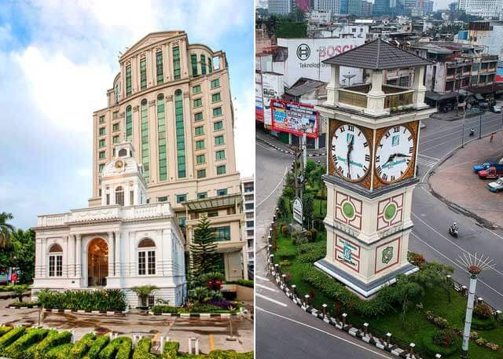

Sejarah
Kota Medan adalah ibu kota provinsi Sumatra Utara, Indonesia. Kota ini merupakan kota terbesar ketiga di Indonesia setelah Jakarta dan Surabaya, serta kota terbesar di luar Pulau Jawa.[5][6][7] Kota Medan merupakan pintu gerbang wilayah Indonesia bagian barat dengan keberadaan Pelabuhan Belawan dan Bandar Udara Internasional Kuala Namu yang merupakan bandara terbesar kedua di Indonesia. Akses dari pusat kota menuju pelabuhan dan bandara dilengkapi oleh jalan tol dan kereta api. Medan adalah kota pertama di Indonesia yang mengintegrasikan bandara dengan kereta api. Berbatasan dengan Selat Malaka, Medan menjadi kota perdagangan, industri, dan bisnis yang sangat penting di Indonesia.Sejarah Medan berawal dari sebuah kampung yang didirikan oleh Guru Patimpus di pertemuan Sungai Deli dan Sungai Babura. Hari jadi Kota Medan ditetapkan pada 1 Juli 1590. Selanjutnya pada tahun 1632, Medan dijadikan pusat pemerintahan Kesultanan Deli, sebuah kerajaan Melayu. Bangsa Eropa mulai menemukan Medan sejak kedatangan John Anderson dari Inggris pada tahun 1823. Peradaban di Medan terus berkembang hingga Pemerintah Hindia Belanda memberikan status kota pada 1 April 1909 dan menjadikannya pusat pemerintahan Karesidenan Sumatra Timur. Memasuki abad ke-20, Medan menjadi kota yang penting di luar Jawa, terutama setelah pemerintah kolonial membuka perusahaan perkebunan secara besar-besaran. Menurut Bappenas, Medan adalah salah satu dari empat pusat pertumbuhan utama di Indonesia, bersama dengan Jakarta, Surabaya, dan Makassar.[8][9] Medan adalah kota multietnis yang penduduknya terdiri dari orang-orang dengan latar belakang budaya dan agama yang berbeda-beda. Selain Melayu dan Karo sebagai penghuni awal, Medan didominasi oleh etnis Jawa, Batak, Tionghoa, Minangkabau, Mandailing, dan India. Mayoritas penduduk Medan bekerja di sektor perdagangan, sehingga banyak ditemukan ruko di berbagai sudut kota. Di samping kantor-kantor pemerintah provinsi, di Medan juga terdapat kantor-kantor konsulat dari berbagai negara seperti Amerika Serikat, Jepang, Malaysia, dan Jerman.